Módulo 3
Scratch paso a paso: un petardo
Del primer bloque a un petardo que explota si haces clic a tiempo. Para quien no ha usado Scratch nunca.
←→ para moverte · B buscar · P pantalla completa
Foto: Acci0n from Sueca · CC BY 2.0 · Wikimedia Commons
Módulo 3
Cinco pasos, un petardo
Nadie monta un juego de golpe. Cada paso añade una sola idea nueva y se puede probar. En los bloques, lo nuevo de cada paso sale con borde verde, y al jugar se ilumina el bloque que se está ejecutando. Para tu clase hay fichas para el alumnado.
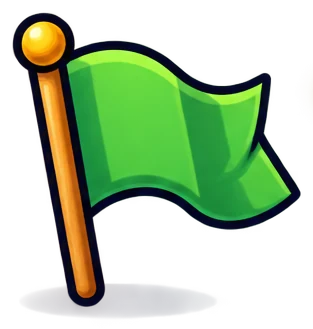
La pantalla de Scratch
Si no lo has abierto nunca, empieza aquí
Un petardo en la plaza
Objetos, disfraces y la bandera verde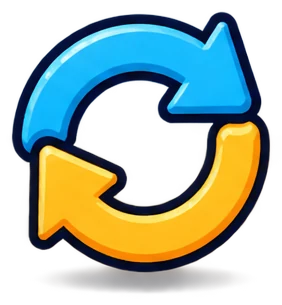
La mecha se quema
Animación y el bucle «repetir»¡PUM! al hacer clic
Eventos, sonido y dos programas a la vez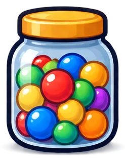
Los decibelios
Variables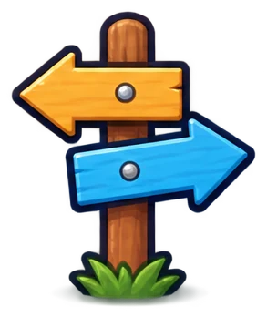
¿A tiempo o fallado?
CondicionalesAntes de empezar
La pantalla de Scratch
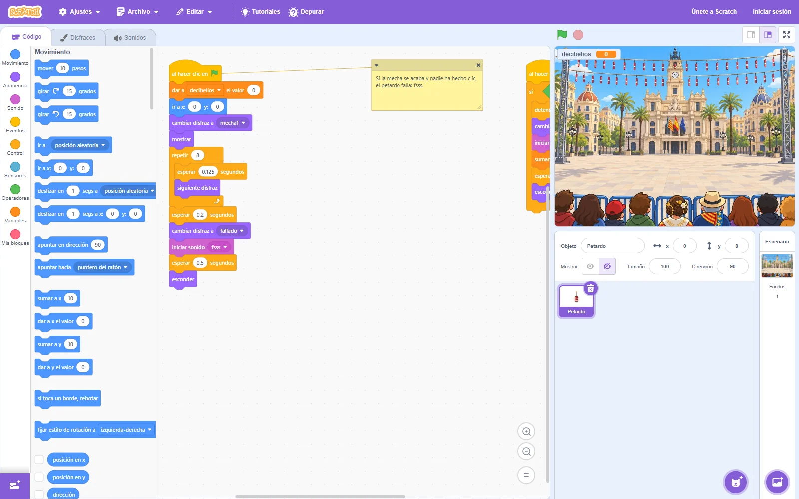
1 2 3 4 5 6 7 8- 1Pestañas: Código, Disfraces y Sonidos.
- 2Categorías de bloques, cada una de un color.
- 3Bloques. Se arrastran al área de programas.
- 4Área de programas del objeto elegido.
- 5Bandera verde (empezar) y parar.
- 6Escenario: donde se ve el juego.
- 7Objetos (en inglés, sprites).
- 8Escenario y sus fondos.
Antes de empezar
Cómo funciona un programa
ObjetoCada personaje o cosa del juego. Nuestro juego tiene uno: el Petardo.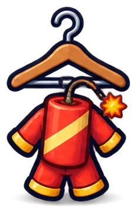
ResultadoEl objeto se mueve, cambia de disfraz o suena en el escenario.Antes de empezar
Abrir cada paso en Scratch
Cada paso tiene su proyecto: un archivo .sb3. Lo pruebas aquí mismo o lo abres en Scratch.
- Pulsa Descargar .sb3 debajo del juego.
- Entra en scratch.mit.edu y pulsa Crear. No hace falta cuenta para probar.
- Menú Archivo › Cargar desde tu ordenador. En el Scratch en castellano a veces sale en inglés: Load from your computer.
- Elige el archivo. Pulsa la bandera verde.
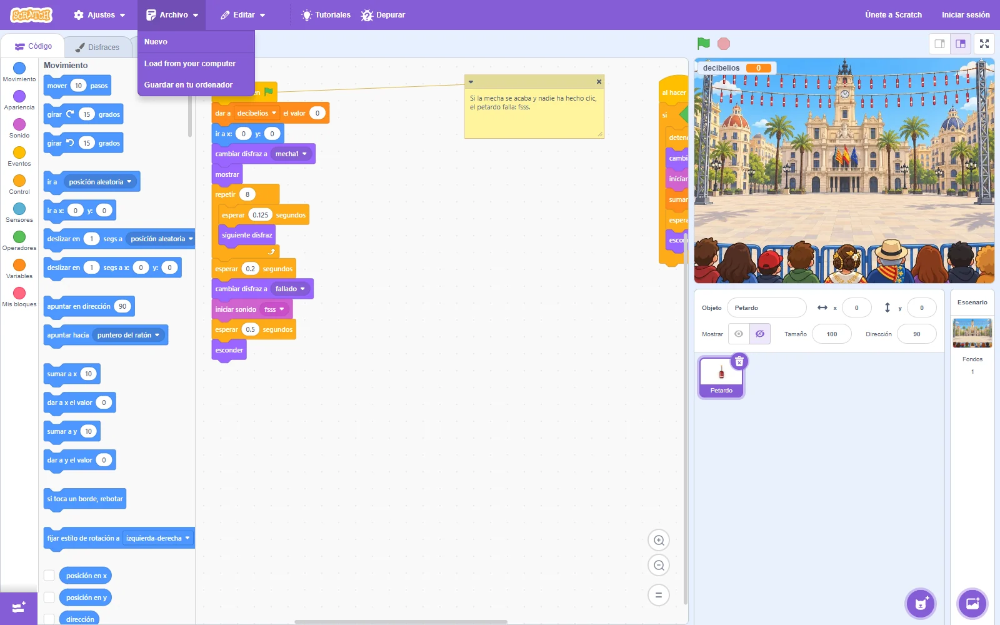
3Para guardar: sin cuenta, Archivo › Guardar en tu ordenador. Con una cuenta de docente de Scratch, el alumnado guarda en la nube.
Paso 1
Un petardo en la plaza
Ideas nuevas: objeto, disfraz, coordenadas y la bandera verde.
Qué vas a conseguir
- Poner el fondo de la plaza.
- Tener un objeto, el Petardo, con sus disfraces.
- Que al pulsar la bandera verde aparezca en el centro.
Paso 1 · Un petardo en la plaza
Disfraces y fondos
Un disfraz es una de las imágenes de un objeto. Un fondo es una imagen del escenario.


- El Petardo tiene 11 disfraces: 9 de la mecha quemándose, la explosión y el petardo fallado.
- Ya vienen dentro del .sb3. En el módulo 2 se explica cómo se hicieron y cómo hacer los tuyos.
- Los ves en la pestaña Disfraces. Cada uno tiene un número y un nombre.
Paso 1 · Un petardo en la plaza
Coordenadas: dónde está cada cosa
x: −240
x: 240
y: 180
y: −180
(0, 0)
El escenario mide 480 × 360. El centro es x: 0, y: 0.
- x va de izquierda (−240) a derecha (240).
- y va de abajo (−180) a arriba (180).
- Los petardos de nuestro juego salen entre x: −180 y 180, y entre y: −80 y 80, para no taparse con el público.
Paso 1 · Un petardo en la plaza
El primer programa
- Al hacer clic en ⚑ Eventos: el programa empieza al pulsar la bandera verde.
- Ir a x: 0 y: 0 Movimiento: va al centro.
- Cambiar disfraz a mecha1 Apariencia: la mecha entera.
- Mostrar Apariencia: el objeto se ve (estaba escondido).
Paso 2
La mecha se quema
Ideas nuevas: animación y el bucle «repetir».
Qué vas a conseguir
- Que la mecha se queme poco a poco.
- Que tarde justo 1 segundo.
- Usar un bucle en vez de copiar bloques.
Paso 2 · La mecha se quema
Animar es cambiar de disfraz
Si cambias de disfraz cada poco tiempo, parece que la mecha se quema. Como los dibujos de un libro que pasas rápido.
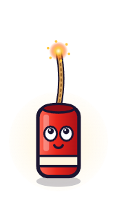
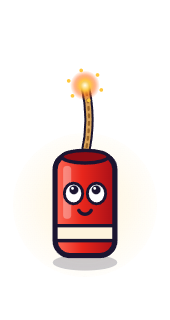
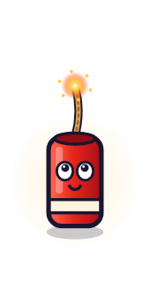
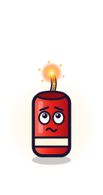
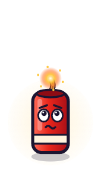
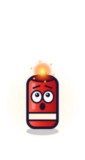
Hay 8 cambios: del 1 al 9. Si cada uno espera 0,125 segundos, la mecha dura 8 × 0,125 = 1 segundo. Así luego cuadra con la música.
Paso 2 · La mecha se quema
Primero, a mano. Después, con un bucle
Primera versión Copiar y pegar
wait (0.125) seconds next costume wait (0.125) seconds next costume wait (0.125) seconds next costume wait (0.125) seconds next costume
wait (0.125) seconds next costume wait (0.125) seconds next costume wait (0.125) seconds next costume wait (0.125) seconds next costume
16 bloques, uno debajo de otro. Es normal empezar así. Cuando funcione, pregunta: «¿Y si fueran 100 cambios?».
Mejor así Un bucle
repeat (8) wait (0.125) seconds next costume end
Un bucle repite los bloques de dentro. «Repetir 8» Control los hace 8 veces.
Paso 2 · La mecha se quema
Pruébalo: la mecha se quema
Es el programa del paso 1 con el bucle debajo. Al acabar, el petardo se queda con la mecha consumida (disfraz 9).
Paso 3
¡PUM! al hacer clic
Ideas nuevas: el evento de clic, el sonido y dos programas a la vez.
Qué vas a conseguir
- Que el petardo explote al hacer clic.
- Que suene «pum».
- Arreglar el primer error de verdad: la mecha sigue quemándose.
Paso 3 · ¡PUM! al hacer clic
Un segundo programa
El mismo objeto tiene ahora dos programas. Cada uno empieza con su evento.
La primera idea
- Al hacer clic en este objeto Eventos: el programa empieza cuando haces clic en el petardo.
- Iniciar sonido Sonido: suena y el programa sigue sin esperar.
- Esperar 0,3 segundos Control: deja ver la explosión.
- Esconder Apariencia: el petardo desaparece.
Paso 3 · ¡PUM! al hacer clic
Pruébalo: la primera idea
Paso 3 · ¡PUM! al hacer clic
El error: la mecha sigue quemándose
Los dos programas funcionan a la vez. El de la mecha no sabe que ha habido un clic: sigue cambiando de disfraz y tapa la explosión.
El bloque detener otros programas en el objeto Control, al principio del clic, para la mecha.
Este error sale siempre en clase. Es un buen momento para hablar de programas que van en paralelo.
Así queda
Paso 3 · ¡PUM! al hacer clic
Pruébalo: haz clic en el petardo
Paso 4
Los decibelios: una variable
Idea nueva: la variable.
Qué vas a conseguir
- Crear la variable «decibelios».
- Ponerla a 0 al empezar.
- Sumar 100 con cada PUM.
- Verla en el escenario como marcador.
Paso 4 · Los decibelios
Qué es una variable
Una variable es una caja con nombre que guarda un número o un texto. El programa puede cambiar lo que hay dentro.
- Categoría Variables › Crear una variable.
- Nombre: decibelios. Marca Para todos los objetos.
- Con la casilla marcada, se ve en el escenario.
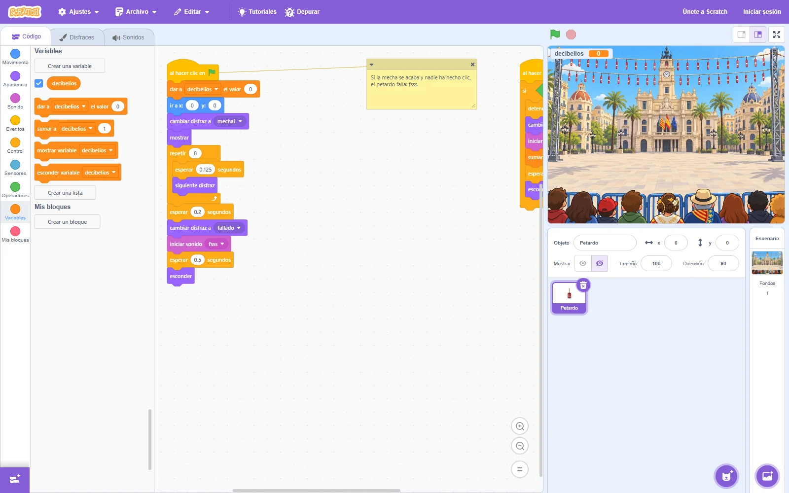
1 3Paso 4 · Los decibelios
Pruébalo: cada PUM suma 100
- Dar a decibelios el valor 0 Variables, al empezar: si no, se acumula de la partida anterior.
- Sumar a decibelios 100 Variables, en cada PUM.
Paso 5
¿A tiempo o fallado?
Idea nueva: la condición «si… entonces».
Qué vas a conseguir
- Que solo explote si haces clic cuando la mecha está casi acabada.
- Que, si nadie hace clic, el petardo falle: «fsss».
- Tener ya el juego de un petardo completo.
Paso 5 · ¿A tiempo o fallado?
¿Cuándo es «a tiempo»?
Cuando la mecha está casi acabada: los disfraces 7, 8 y 9. Es decir, cuando el número de disfraz es mayor que 6.
if <(costume [number v]) > (6)> then end
Un niño no necesita medir el tiempo: mira en qué disfraz está la mecha. El bloque redondo disfraz (número) está en Apariencia, el hexagonal > en Operadores y el si… entonces en Control.
Paso 5 · ¿A tiempo o fallado?
Si nadie hace clic: fallado
Programa de la bandera
Después de la mecha, el programa espera 0,2 segundos más y se pone el disfraz fallado.
Si ha habido un clic a tiempo, este final no llega a pasar: el clic lo ha parado con detener otros programas en el objeto.
Paso 5 · ¿A tiempo o fallado?
Pruébalo: un petardo completo
Para el docente
Cuando algo no funciona en clase
Equivocarse es parte de programar. Los fallos que más salen, y qué preguntar para que lo encuentren ellos.
| Lo que pasa | Por qué suele pasar | Qué preguntar |
|---|---|---|
| Pulso la bandera y no pasa nada | Falta «al hacer clic en ⚑», o hay un bloque sin encajar | «¿Con qué bloque empieza? ¿Está todo pegado?» |
| No veo el petardo | Falta «mostrar», o el programa está en el escenario | «¿Qué objeto tienes elegido?» |
| La mecha no dura 1 segundo | El decimal va con coma. En Scratch, con punto: 0.125 | «¿Cómo has escrito el número?» |
| Los decibelios no vuelven a 0 | Falta «dar a decibelios el valor 0» al empezar | «¿Cuánto vale al empezar la partida?» |
| Explota aunque llegue pronto | Los bloques del PUM están fuera del «si» | «¿Qué bloques están dentro del si?» |
| He perdido mi trabajo | No se guardó | Guardar al acabar cada paso |
Resumen del módulo 3
Lo que ya sabe hacer tu petardo
Eventos
«Al hacer clic en ⚑» y «al hacer clic en este objeto».
Disfraces
Animar es cambiar de disfraz cada poco tiempo.
Bucles
«Repetir 8» en vez de copiar 16 bloques.
Sonido
«Iniciar sonido» suena sin parar el programa.
Variables
«decibelios» empieza en 0 y suma 100.
Condiciones
Solo explota si el disfraz es mayor que 6.
Fin del módulo 3
Tienes un petardo. Ahora, una mascletà
En el módulo 4 el petardo se multiplica con clones, suena la música y los petardos explotan a su ritmo.